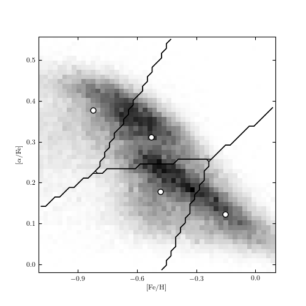

EM example: K-means¶
Figure 6.13
The K-means analysis of the stellar metallicity data used in figure 6.6. Note how the background distribution “pulls” the cluster centers away from the locus where one would place them by eye. This is why more sophisticated models like GMM are often better in practice.
{kind=link}
# Author: Jake VanderPlas
# License: BSD
# The figure produced by this code is published in the textbook
# "Statistics, Data Mining, and Machine Learning in Astronomy" (2013)
# For more information, see http://astroML.github.com
# To report a bug or issue, use the following forum:
# https://groups.google.com/forum/#!forum/astroml-general
import numpy as np
from matplotlib import pyplot as plt
from matplotlib.patches import Ellipse
from scipy.stats import norm
from sklearn.cluster import KMeans
from sklearn import preprocessing
from astroML.datasets import fetch_sdss_sspp
#----------------------------------------------------------------------
# This function adjusts matplotlib settings for a uniform feel in the textbook.
# Note that with usetex=True, fonts are rendered with LaTeX. This may
# result in an error if LaTeX is not installed on your system. In that case,
# you can set usetex to False.
if "setup_text_plots" not in globals():
from astroML.plotting import setup_text_plots
setup_text_plots(fontsize=8, usetex=True)
#------------------------------------------------------------
# Get data
data = fetch_sdss_sspp(cleaned=True)
X = np.vstack([data['FeH'], data['alphFe']]).T
# truncate dataset for speed
X = X[::5]
#------------------------------------------------------------
# Compute a 2D histogram of the input
H, FeH_bins, alphFe_bins = np.histogram2d(data['FeH'], data['alphFe'], 50)
#------------------------------------------------------------
# Compute the KMeans clustering
n_clusters = 4
scaler = preprocessing.StandardScaler()
clf = KMeans(n_clusters)
clf.fit(scaler.fit_transform(X))
#------------------------------------------------------------
# Visualize the results
fig = plt.figure(figsize=(5, 5))
ax = fig.add_subplot()
# plot density
ax = plt.axes()
ax.imshow(H.T, origin='lower', interpolation='nearest', aspect='auto',
extent=[FeH_bins[0], FeH_bins[-1],
alphFe_bins[0], alphFe_bins[-1]],
cmap=plt.cm.binary)
# plot cluster centers
cluster_centers = scaler.inverse_transform(clf.cluster_centers_)
ax.scatter(cluster_centers[:, 0], cluster_centers[:, 1],
s=40, c='w', edgecolors='k')
# plot cluster boundaries
FeH_centers = 0.5 * (FeH_bins[1:] + FeH_bins[:-1])
alphFe_centers = 0.5 * (alphFe_bins[1:] + alphFe_bins[:-1])
Xgrid = np.meshgrid(FeH_centers, alphFe_centers)
Xgrid = np.array(Xgrid).reshape((2, 50 * 50)).T
H = clf.predict(scaler.transform(Xgrid)).reshape((50, 50))
for i in range(n_clusters):
Hcp = H.copy()
flag = (Hcp == i)
Hcp[flag] = 1
Hcp[~flag] = 0
ax.contour(FeH_centers, alphFe_centers, Hcp, [-0.5, 0.5],
linewidths=1, colors='k')
ax.xaxis.set_major_locator(plt.MultipleLocator(0.3))
ax.set_xlim(-1.101, 0.101)
ax.set_ylim(alphFe_bins[0], alphFe_bins[-1])
ax.set_xlabel(r'$\rm [Fe/H]$')
ax.set_ylabel(r'$\rm [\alpha/Fe]$')
plt.show()